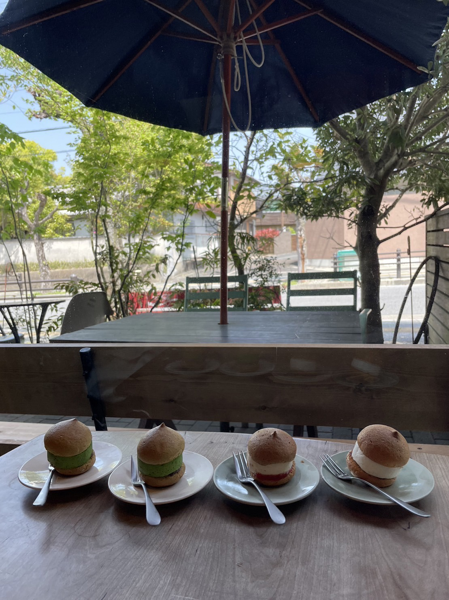
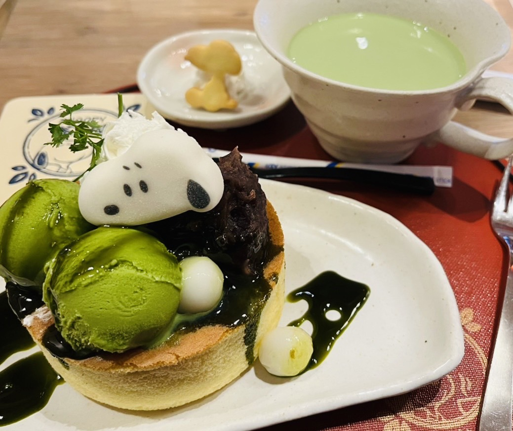

抹茶の魅力 - 美味しさの奥深さを楽しむ抹茶ケーキ特集 -
甘く織りなす緑の宝石、抹茶ケーキの絶品スイーツを堪能しよう！
1.茶筅

「宇治お抹茶ティラミス」は京都の苔庭を彷彿とさせる見た目になっており、上には抹茶の粉末が振りかけられてあります。そして中には抹茶蜜に浸したスポンジケーキ、抹茶生クリーム、マスカルポーネチーズカスタードが入っています。風味高い抹茶の香りと滑らかな2種類のクリームを味わうことのできる一品です！他にも8種類の抹茶スイーツが入った玉手箱もあるので、そちらもおすすめです。
京都駅直通となっているので、京都駅に行った際にはぜひ立ち寄ってみてください。
アクセスマップ
店舗情報
2.KW THE KITCHENE WONDERLAND

「KW THE KITCHENE WONDERLAND」は丸栄が手がけた新商業施設「マルエイガレリア」の中にあります。自分好みにカスタマイズできるティラミスが人気のお店です。
栄駅直結でアクセスも抜群です。WiFiや電源も完備しているので、仕事や勉強をするのにもオススメです！
アクセスマップ
店舗情報
3.MACCHA HOUSE 抹茶館

写真の「宇治抹茶のティラミス」は上に抹茶の粉末がかかっており、木の桝に入った見た目がかわいらしいスイーツです。下には抹茶シロップをしみこませたスポンジが入っており、その上にマスカルポーネクリームが入っています。このクリームはトロトロで、もはや飲み物レベル！ほうじ茶のティラミスや、ドリンクも楽しめます！
清水にいった際は立ち寄ってみてはどうでしょうか。
アクセスマップ
店舗情報
4.cafe&wine Mamma Mia LABORATORY なんてこった研究所

写真の「濃厚抹茶のガトーショコラ」は小麦感をあまり感じなく、生チョコのような風味です！外側には抹茶の粉末が振りかけられており、食べ進めるにつれて抹茶感を強く感じられます。全体的に柔らかく、内部は特にトロトロでありながらも満足感を感じられる一品です。
名古屋でも本格的な抹茶が楽しめるこの店に足を運んでみてはどうでしょうか。
アクセスマップ
店舗情報
5.西条園抹茶カフェ グローバルゲート店
 抹茶カフェという名前の通り、抹茶を使ったスイーツが豊富に揃っています。抹茶の味を存分に楽しめるので、抹茶好きにはたまらないお店です。写真に写っている抹茶バスクチーズケーキは見た目はすごく濃厚そうですが、抹茶の苦味が効いていて優しい甘さで食べやすいです。ぜひ一度食べてみてください。
抹茶カフェという名前の通り、抹茶を使ったスイーツが豊富に揃っています。抹茶の味を存分に楽しめるので、抹茶好きにはたまらないお店です。写真に写っている抹茶バスクチーズケーキは見た目はすごく濃厚そうですが、抹茶の苦味が効いていて優しい甘さで食べやすいです。ぜひ一度食べてみてください。
アクセスマップ
店舗情報
6.空気ケーキ。
「空気ケーキ。」は空気のようにふわふわで軽いクリームが特徴の空気ケーキが人気のお店です。特に抹茶味は甘いクリームと抹茶のほろ苦さが絶妙にマッチしている最高の一品です。東大寺や興福寺などの世界遺産も近くにあるので、観光の際に立ち寄るのもおすすめです。
アクセスマップ
店舗情報
7.スヌーピー茶屋 伊勢店
スヌーピーが店先でお出迎えしてくれており、店内に入ってもスヌーピーの世界のかわいいキャラクターたちに囲まれながらおいしいスイーツを楽しめるスヌーピー好きに特にオススメしたいお店になっています！スヌーピーグッズが買えるショップも併設されており、ここでしか買えない限定グッズもあるので伊勢に行った際にはぜひ立ち寄ってみてください。